← 返回阅读库 · 原论文目录
论文讲解阅读文档 · 机器人学 · v118
SPR Data-Efficient RL with Self-Predictive Representations[2007.05929]
视频时长 00:08:14；讲解文字 3,719 字符；提取讲解画面 17 张。按视频原顺序阅读，每段文字保留时间戳。
文字来自整段视频的自动语音转写，按自然停顿分段，并与 PPT / 论文页面 / 演示画面对齐。未将讲解压缩为摘要；术语、数字和口述公式请结合画面及原论文核对。 阅读稿已校正规范部分明确术语误识别；原始逐字稿和每处修改记录另行保留。
讲解画面为源视频截图（640×360），不是可编辑 PPT 文件。全片按每秒 2 帧扫描内容变化，逐步展开页保留；连续动画保留代表画面。清晰度受源视频限制。
下载完整资料包 · 含离线 HTML、PDF、Word、全部 PPT 画面和字幕。
原论文与材料
Data-Efficient Reinforcement Learning with Self-Predictive Representations · 下载完整 PDF（18 页）
按时间阅读
00:00:00–00:00:49 · 画面 001
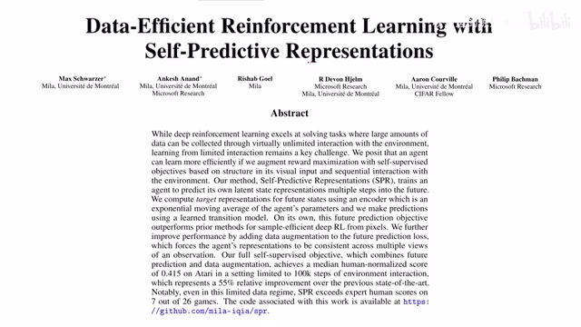
00:00:00–00:00:49 · 画面 001大家好,今天我们来迅速说一篇论文 Data-efficient reinforcement learning with self-predictive representations。那么本文的核心思想呢，就是在我们训练 reinforcement learning 的同时，增加这个 self-supervised 的任务，联合地训练这两个任务。在这个过程中呢，我们希望学到一个好的 representation。这个好的 representation 呢，用来可以改善我们 reinforcement learning 它的性能。
那么这个思路呢，跟我们之前介绍的 CURL 是一致的。然后它具体的网络的实现呢，跟我们之前介绍的 BYOL 又是非常相似的。所以呢，我们这次就快速的介绍这篇论文。如果对以上这两篇论文你不是特别清楚的话，欢迎查看我们之前相关的解释视频。那么这个视频的内容呢，也是非常简单，先是介绍本文提出的方法它的具体实现，然后呢是作者汇报的一些结果。
00:00:49–00:00:57 · 画面 002
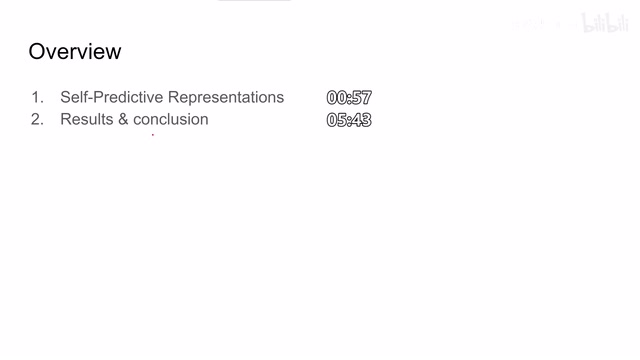
00:00:49–00:00:57 · 画面 00200:00:57–00:02:57 · 画面 003
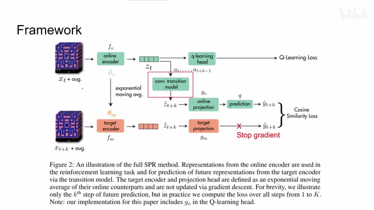
00:00:57–00:02:57 · 画面 003首先呢，我们输入的是一个 state action 的一个序列。这里呢，假定它的长度为 k。我们把第一个时刻的图像 t 来对它进行图像增强，放到我们的 online encoder 里面，然后得到一个 latent representation zt。这个 zt 呢，就是我们想要学习的 latent representation。那么对于 reinforcement learning 来说，我们加上 qlearning 的这个 head，得到 qlearning 的 loss。
那么这一路呢，就是 reinforcement learning。但是同时呢，我们要拿这个 latent representation 来做这个预测。也就是说，我们想从 dt 时刻的 latent representation 通过我们的输入这些 action 然后经过几层 mlp，我们想要预测在 t 加 k 时刻这个时候的 latent representation 是什么样子。那么这只呢，到这里我们先暂时放一下，再看下面这个是 t 加 k 时刻时候的。
state 我们对它使用 data augmentation，然后呢送到我们的 target encoder 里面。这个时候呢，就得到它的 latent representation。那么下面要做的部分呢，就跟 byol 完全一致了，就是我们把两个 latent representation 全部放到那个 projector 里面做两个 projection。在投到一个更高位的 latent space 之后呢，我们的上面的这一只 latent representation 呢，在经过一个 predictor。
来尽量逼近在 latent space 中下面的这个 latent representation。那么同样的，它衡量这两个向量的相似程度的用的呢，跟 BYOL 也是一样是 cosine similarity。那么这里呢，我补充一下作者没有在这个图中体现的细节，就是在我们训练这个 loss 的时候，这里是需要把这个 loss 停住的是需要把这个 gradient 停住的。而我们的 target encoder 呢，也是通过。
使用 momentum 动量的方式来更新这个 target encoder 的里面的参数。所以说，如果单看下面这一只，除去输入的图像它们是来自不同时刻这个因素之外，其他的配置呢，跟 BYOL 是一模一样的。而上面这部分呢，比 BYOL 它多了一个这个 convolution transition model，也就是预测未来几帧的这个任务。
00:02:57–00:03:51 · 画面 004
00:02:57–00:03:51 · 画面 004那么关于预测未来这个任务呢，我们在之前这个 Evolving Losses 那篇论文的时候已经讲过了，它是一种常见的来帮助 Self-supervised system 学习 Latent Representation 的方法。所以我们可以不严谨的认为，这篇文章呢，是在 CURL 的基础之上把 BYOL 融进去，把这个 Self-supervised 这个 PredictivePredictive Future 预测未来这些任务融进去，得到了这么一篇。
reinforcement learning 的这个文章那么对比作者提供的算法我们来具体来看它的实现细节首先我们使用 policy 来去放到 replay buffer 中然后在 replay buffer 中采集出样本来而这个样本呢是一串 state-action 它的序列我们对这个 input state 做 data augmentation 把每一时刻的 state 送到我们的 encoder 里面这里呢就是 online encoder 那么在得到 latent representation z0 之后呢我们循环 k 次
00:03:51–00:04:39 · 画面 005
00:03:51–00:04:39 · 画面 005那么使用这个 H,也就是这个 Transition Model,让它把现在的 Latent Representation 拿上,把我们的 Action 拿上,来预测出下一帧的这个 Latent Representation。那么每当预测出一帧来的时候呢,我们就取这一帧的图像的 Ground Truth,来放到这个 Momentum Target Encoder 里面,得到一个 Latent Representation。然后呢,像 BYOL 一样,它们各自的过自己的 Projection。
00:04:39–00:04:40 · 画面 006
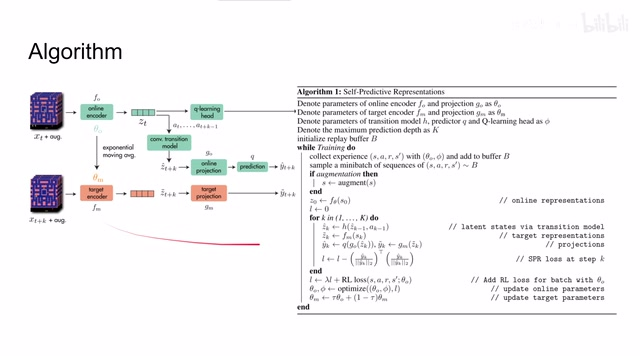
00:04:39–00:04:40 · 画面 00600:04:40–00:05:43 · 画面 007
00:04:40–00:05:43 · 画面 007然后呢这个上面这一只呢我们预测的结果呢还要过一个 predictor 那么最后呢得到两个向量我们计算他们的这个他们的 similarity 作为我们的 loss 可以看到呢这里作者是对未来的每一帧都进行了这种类似于 BYOL 来构造 loss 的过程那么结束之后呢我们就得到这边 self-supervised 或者说是关于 representation 的 loss那么再加上这边我们有一个 reinforcement learning 它的 loss 然后呢使用这个 lambda 作为一个 hyper parameter 来控制这两个 loss 的权重嘛然后呢去优化我们的 online encoder 在我们得到新的 online encoder 之后呢再使用 momentum 的方法或者叫 exponential moving 的方法我们来更新这个 target encoder 那总的来说还是如果你已经熟悉了 curl
BYOL 这些东西那么这些文章来讲是非常好理解的那么来看到最后的结果作者呢这里只汇报了 Atari 环境可以看到虽然在每个游戏中呢本文提出的这个方法它的得分不一定说每个游戏都是最优的但是呢如果考察所有游戏的综合表现是 outperform 之前这些方法的那么这个箱线图更加直观地反映了本文提出的方法在 Atari 环境中的表现
00:05:43–00:05:48 · 画面 008
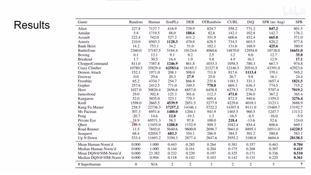
00:05:43–00:05:48 · 画面 00800:05:48–00:05:49 · 画面 009
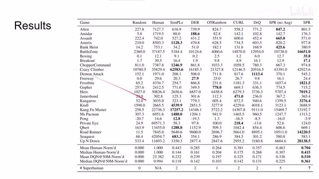
00:05:48–00:05:49 · 画面 00900:05:49–00:05:55 · 画面 010
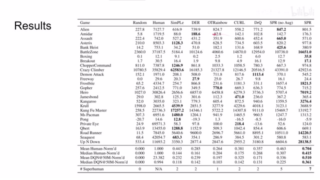
00:05:49–00:05:55 · 画面 01000:05:55–00:05:58 · 画面 011
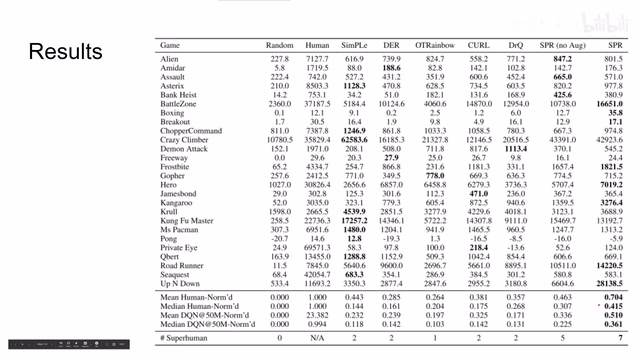
00:05:55–00:05:58 · 画面 01100:05:58–00:06:00 · 画面 012
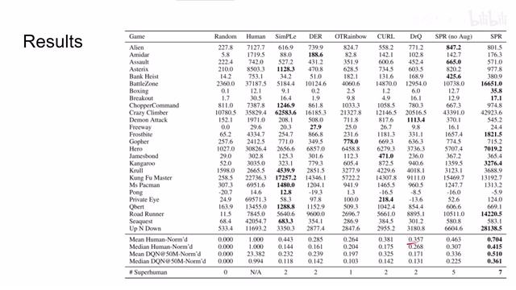
00:05:58–00:06:00 · 画面 01200:06:00–00:06:01 · 画面 013
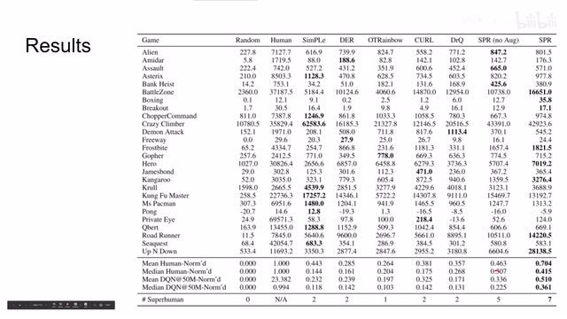
00:06:00–00:06:01 · 画面 01300:06:01–00:06:10 · 画面 014
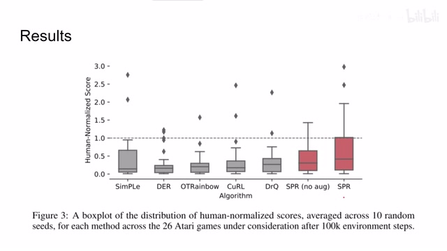
00:06:01–00:06:10 · 画面 014那么这个虚线呢就是一般人类玩家的水准那么除去以上汇报的结果呢作者呢还重点测试了我们如果选择不同的 Loss 会产生什么样的结果其实呢主要也就是研究了如果我把下面的 BYOL 换成原始的 CURL 它里面的那个 contrastive loss 比如说像这个配置 No Temporal Contrastive Loss 这就是跟原始的 CURL 一样的
00:06:10–00:07:15 · 画面 015
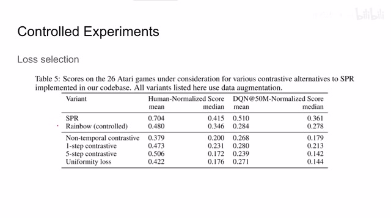
00:06:10–00:07:15 · 画面 015它的上下两支的输入都是同一帧的图像还有 one step 和 five step 这个就是我在中间 prediction 的环节对未来做一步或者是对未来做五步的预测然后最后结尾也使用 contrastive loss 来做对比这个 uniformity loss 是在原来的这个 SPR loss 的基础上我再增加一个类似于 entropy 的 loss那么这个 entropy 呢会把我们的样本尽量均匀的散布在这个 latent space 里面会让我们这个样本呢各自远离彼此但是从实验结果来看呢可能他选的这个并不是非常适合这个网络结构或者说他的训练方法那么除去这个之外呢作者还验证了这个 data augmentation 和 stop gradient 因为 BYOL 里面我们 stop gradient 嘛这是非常重要的那么这些都是我们已经知道了他们确实非常重要
00:07:15–00:08:13 · 画面 016
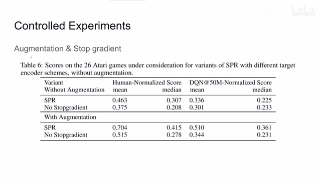
00:07:15–00:08:13 · 画面 016那么总的来说这篇论文呢通过结合我们之前提到了几篇论文的这个科技来拼凑出了一篇性能表现还可以的解决方案那比较遗憾的是呢他只测试了 Atari 环境然后他选择的控制时间等等并不是那么的丰富唯一有亮点的地方呢就是他把我们的 future prediction这个常见呢在在 self-supervised 视频的时候常用的一个方法来代入到了这个 reinforcement learning 当中同时呢它是和 reinforcement learning 是一起来训练这两个 loss 的这可以对我们未来的工作呢提供一个参考好的以上就是我对这篇论文的一个快速的分析那么感谢您的收看再见
00:08:13–00:08:14 · 画面 017
00:08:13–00:08:14 · 画面 017转写与来源说明 · 0 个自动复核提示
保留 18 个原始语音片段，0 个片段触发自动复核提示。提示仅用于定位可能的术语、重复或识别问题，不等于已确认错误。
讲解画面为源视频截图（640×360），不是可编辑 PPT 文件。全片按每秒 2 帧扫描内容变化，逐步展开页保留；连续动画保留代表画面。清晰度受源视频限制。
原视频：paper/合集_2026-10-16_机器人学/[论文简析]SPR Data-Efficient RL with Self-Predictive Representations[2007.05929].mp4
SHA-256：824f14b556f49131d15fd9b6515633240226b749554626694c491b5fc368516c
全文按视频语音与画面制作。原论文可从上方链接下载；完整资料包保留全文、原始逐字稿、字幕和校对记录。